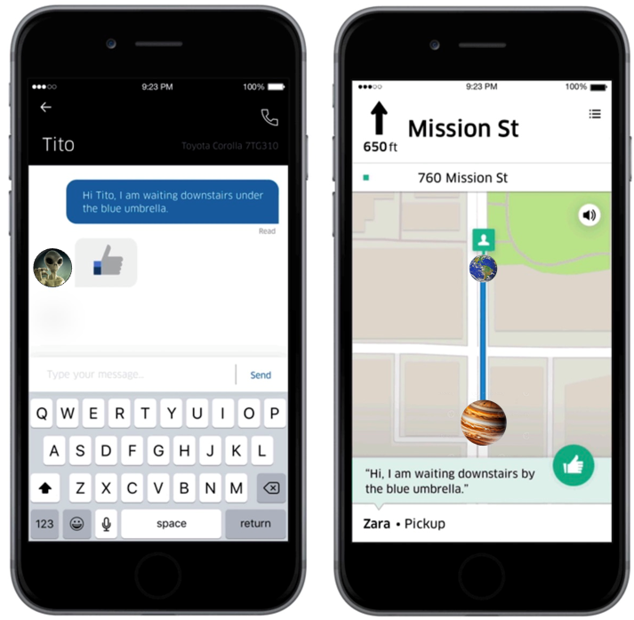

Jumpers, es la aplicación más famosa de la galaxia por sus servicios de transporte que facilitan la realización de viajes intergalácticos, conectando a usuarios con conductores disponibles cercanos, a través de su aplicación móvil y pagina web.
Fue creada por la empresa Generation, como proyecto de sus estudiantes desarrolladores más destacados del Bootcamp que ofrece la empresa cada año en desarrollo full-stack.
Fue creada con Java un lenguaje de programación muy usado, junto a frameworks como Spring boot que facilitó la construcción del servidor, y bases de datos SQL, permitiendo gestionar y almacenar la información de usuarios, conductores, rutas y más.
Y también, para su construcción se utilizó lenguajes de programación como HTML, CSS, JavaScript, frameworks como React, que permiten ofrecer la parte visual al usuario, el diseño de la aplicación y pagina web, su funcionamiento, botones, rutas, mapas, etc.
Gracias al desarrollo full-stack (la especialidad de los creadores), fue posible trabajar en la creación de la aplicación, tanto en la parte visual que puede percibir cada usuario, llamada front-end, como la parte del servidor, que no es percibida por usuarios, pero que maneja y almacena toda la información necesaria para el funcionamiento de la aplicación, más conocida como back-end.
De esta forma, se juntó el diseño y la parte lógica que maneja información de la aplicación, como viajes, usuarios y conductores, para crear esta aplicación de servicios de transporte galáctico. Teniendo como resultado un servicio intuitivo con los usuarios, adaptable a celular, computadoras, tabletas, que maneja información segura como datos de usuarios, conductores, pagos y cobros, rutas y horarios, información guardada en bases de datos y encriptada para mayor seguridad.
Entrevistamos a Zara, una usuaria de la aplicación sobre la parte visual, a lo que expresó: “Me agrada que reconoce el idioma natal, y da opciones de elegir cualquier idioma de la galaxia, definitivamente los desarrolladores estuvieron pendientes de los detalles. Me puedo comunicar por mensajes con mi conductor asignado incluso si es de otra especie, gracias al buen traductor que ofrece Jumpers. Además, me gusta que es una aplicación fácil de usar, con mapas accesibles, y colores bonitos, que se adapta incluso en mi celular más pequeño.”.
Definitivamente, se puede reconocer el buen trabajo de los desarrolladores, que permitió hacer la aplicación funcional, manejando gran cantidad de información de usuarios, conductores, rutas, pagos y cobros de manera segura, y de manera visual, de forma que los usuarios puedan tener fácil acceso, con el idioma adecuado, el tamaño correcto en sus dispositivos, y con un diseño atractivo.
Estos proyectos tecnológicos, ayudan a mejorar la comunicación, la cercanía y el acceso a la tecnología a diferentes usuarios de manera intuitiva, es maravilloso que existan todos estos procesos realizados desde la parte back-end, y front-end, que hasta parecen magia, pero es el resultado del esfuerzo de desarrolladores full-stack tras la pantalla, y de todo un equipo encargado de la calidad del software y los requerimientos del cliente.
Daniela Lozano Vásquez.
Redactora del Galacticón y Desarrolladora Web Trainee.
Octubre 16, 2023.